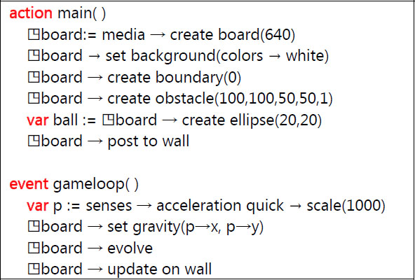

TouchDevelop includes a “game board” API for writing simple sprite-based games. The API includes a primitive physics engine to simplify common game loops where objects are moving while they experience gravity and friction. Game board elements can be orchestrated using events based on touch and regular timing intervals.
9.1 Introduction
9.1.1 What is a sprite?
In TouchDevelop, sprites are 2D bitmaps that are drawn directly to the screen. Sprites are commonly used to display information such as health bars, number of lives, or text such as scores. Some games, especially older games, are composed entirely of sprites. TouchDevelop allows creation and use of several types of sprite, such as ellipse, rectangle, text and picture. More details about a sprite’s capabilities can be obtained from http://msdn.microsoft.com/en-us/library/bb203919.aspx
9.1.2 Coordinates and units
Positions in the game board API are based on pixels. The origin of the grid is the top left corner when holding the device upright, the x-axis is horizontal, the y-axis vertical. Sprite positions refer to the center of the sprite, i.e., the halfway point of its width and height before any rotation is applied. The reasoning behind this choice is so that sprites can rotate around their center. Future versions of TouchDevelop may provide more control for offsetting sprites from their position. Speed and acceleration are measured in pixels/second and pixels/second2.
9.1.3 Game program structure
The code for a typical game has an underlying structure like the following.
action
main( )
◳board := media → create board(640)
// … create sprites, add color and features to the board
◳board → post to wall
event
gameloop( )
// … move objects around …
◳board → update on wall
The gameloop event is triggered approximately every 50 milliseconds, i.e. about 20 times per second.
9.2 The Board datatype
The media resource three two methods for creating a game board; they are listed in Table 9-1. The maximum height supported by TouchDevelop for a board is 640 pixels. A board created by media→create board is 456 pixels wide; a board created by media→create portrait board is 480 pixels wide. A board remains invisible until it is posted to the wall.
Once posted, updates to the board state and the sprites on the board become visible only when calling board→update on wall.
The methods of the Board datatype concerned with the board’s dimensions and general appearance are listed in Table 9-2. The board has a background color and a background picture that can be set separately. The default background color is transparent, and no background picture is provided by default. An additional possibility is to copy the images captured by the device’s primary camera and use those images as an ever changing background for the board. Only one of these background possibilities can be active at a time.
Table 9-1
Methods to create a board
Methods | Description |
|---|---|
media→create board(
height : Number) : Board
| Creates a new board with the specified height in pixels |
media→create portrait board : Board
| Creates a new board that fills the entire screen when displayed and assumes the device is held in portrait mode. |
media→create landscape board : Board
| Creates a new board that fills the entire screen when displayed and assumes the device is held in landscape mode. |
9.2.1 Creating sprites
There are four kinds of sprite that display different kinds of visual content. They can have the shapes of ellipses or rectangles. They can be drawn as solid figures, or they can take the form of a piece of updatable text, or be created from a picture. There is a fifth kind of sprite known as an anchor sprite. It is invisible and has a special purpose, which is explained below under the heading ‘springs and anchors’. Sprites are associated with particular game boards and are created by methods of the Board type. The methods for creating and accessing sprites are listed in Table 9-3.
Sprites have initial positions centered on the board and no speed or angular rotation. These properties can be set for each sprite using the methods of the Sprite datatype.
In addition to the at method, a for each loop can be used to access all the sprites on a board. If board is a variable of type Board, then the loop has the following structure.
for each
sprite
in
board
where
true
do
// access the sprite
Table 9-2
Methods of Board datatype: appearance
Board Method | Description |
|---|---|
clear background camera : Nothing
| Removes any association of the board’s background image with the camera |
clear background picture : Nothing
| Removes any background picture provided for the board |
height : Number
| Returns the board height in pixels |
is landscape board : Boolean
| Returns true if the board is designed for viewing in landscape mode |
set background(color : Color) : Nothing
| Sets the background color for the board |
set background camera(camera : Camera) : Nothing
| Sets the background for the board to be image captured by the primary camera |
set background picture(
picture : Picture) : Nothing
| Sets a background picture to display on the board |
width : Number
| Returns the board width in pixels |
Table 9-3
Methods of Board datatype: creating / accessing sprites
Board Method | Description |
|---|---|
at(i : Number) : Sprite
| Returns sprite number i on this board instance (0 ≤ i < count) |
count : Number
| Returns the number of sprites on this board |
create anchor(width : Number, height : Number) : Sprite
| Creates an invisible unmovable anchor sprite |
create ellipse(width : Number, height : Number) : Sprite
| Creates a sprite with an elliptical shape |
create picture(picture : Picture) : Sprite
| Creates a sprite with the same dimensions and image as the picture |
create rectangle(width : Number, height : Number) : Sprite
| Creates a sprite with a rectangular shape |
create sprite set : Sprite Set
| Creates an empty collection of sprites |
create text(width : Number,
height : Number, fontSize : Number, text : String) : Sprite
| Creates a sprite which is displayed on the board as a text string |
During games it is very useful to have several collections of sprites. For example, one collection contains spacecraft, another asteroids, and so on.
A sprite collection can be created as an instance of the Sprite Set datatype. The method create sprite set creates a new set which can hold sprites associated with the Board instance. Sprites can be added to and removed from these sets by using methods of the Sprite Set datatype.
9.2.2 Obstacles and boundaries
Obstacles are walls that can be added to the board. Walls cannot be moved once created. Moving sprites which encounter an obstacle will bounce back with a speed determined by the product of the obstacle’s elasticity and the sprite’s elasticity. Elasticities of 1 for both the obstacle and the sprite means the sprite will maintain its full speed, albeit in a different direction. If one or both elasticities are 0, there will be full absorption of the impulse; the sprite will stick to the wall. By default, all elasticities are 1.
By default, the board is open, meaning it has no boundary. Sprites moving off the visual part of the board will simply continue moving away. Since it is common to need reflecting walls around the board, the create boundary(distance) method can be used to create a reflective set of walls around the board at the given distance from the board’s edges. The elasticity of these reflective walls is 1, i.e. the sprite’s speed is not reduced. If the distance of the boundary from the board’s edge is larger than the sprite’s size, a sprite can disappear off the screen before bouncing back and re-appearing. If the distance is set as a negative number, the boundaries are located inside the board area.
The methods for creating obstacles and boundaries are listed in Table 9-4.
9.2.3 Forces and animation
Gravity and friction
A uniform force can be applied to all sprites on the board. For instance, there could be a force which pulls all objects towards the bottom of the screen, mimicking the force of gravity. However this gravitational force need not remain constant. If the device possesses the necessary sensors, the script can repeatedly use the device’s orientation, as determined by its gyroscope, or its accelerometer readings to vary the force and direction of gravity that is experienced by objects in the game.
Table 9-4
Methods of Board datatype: obstacles / boundaries
Board Method | Description |
|---|---|
create boundary(distance : Number) : Nothing
| Create perfectly reflective walls around the board at the given distance from its edges |
create obstacle(x : Number,
y : Number, xsegment : Number, ysegment : Number,
elasticity : Number) : Nothing
| Create a solid obstacle in the form of a line starting at x, y and continuing xsegment, ysegment in the x and y directions; elasticity is in the range 0 (sticky) to 1 (fully reflective) |
Once sprites are given speeds or if gravity has been made non-zero, the board engine can update a sprite's position. To update all sprite positions for one time step, the board→evolve method should be invoked. The duration of the time step is simply the time since the last call to board→evolve or since the creation of the board.
A simple script which uses obstacles and gravity appears in Figure 9-1.

Figure 9-1
Example script: a moving ball (/nyuc)
The script creates a board and adds a reflective wall around the entire board. It then creates a small obstacle wall and a single sprite in the shape of a ball. Within the game loop, the accelerometer is used to set the gravity on the game board. To make the ball move more quickly, the acceleration is scaled by a factor of 1000.
By default, a sprite keeps on moving without slowing down. It can lose speed only if it moves in an opposite direction to gravity or if it loses energy in a collision with an obstacle whose elasticity is less than 1. If it is desirable to make sprites slow down by themselves, a default friction setting can be provided for the board or for each sprite individually.
Each sprite can have its own friction setting but, if not set, each sprite experiences the default friction from the board. A friction is defined as the fraction of the forward speed that is experienced as a backwards force. A friction of 0 corresponds to no friction, and a friction of 1 means the sprite will not move at all.
The methods for animating the board and applying forces to sprites are summarized in Table 9-5.
Table 9-5
Methods of Board datatype: forces / animation
Board Method | Description |
|---|---|
create spring(sprite1 : Sprite, sprite2 : Sprite, stiffness : Number) : Nothing
| Creates an attractive force between two sprites; stiffness determines the strength of the force |
evolve : Nothing
| Update the positions of all sprites on the board |
set friction(friction : Number) : Nothing
| Set the default friction for all sprites which do not have their own friction settings; friction is in the range 0 (no loss of speed) to 1 (total loss of speed) |
set gravity(x : Number, y : Number) : Nothing
| Sets a uniform acceleration vector x,y for all sprites on the board |
Springs and anchors
A spring can be added between two sprites to make them accelerate towards each other. A spring is created by the create spring method listed in Table 9-5. The force of the spring is proportional to the distance between the two sprites. The further they are apart, the stronger the force. The constant of proportionality is determined by the stiffness parameter of create spring. The larger its value, the stronger the attractive force.
Without friction to dissipate energy over time, sprites linked by a spring will oscillate indefinitely. With friction, they will eventually converge on the same point. A common scenario is to fix one of the two spring-linked sprites on the board (make it unmovable).
One way to produce an unmovable sprite is to set its friction to 1. An alternative possibility is to use an invisible anchor sprite. The create anchor method creates the invisible sprite with its friction set to 1.0. A sprite linked to an anchor via a spring therefore oscillates around the anchor. Giving the sprite an initial velocity vector perpendicular to the direction of the spring causes the sprite to circle around the anchor. With multiple anchors and springs, some interesting oscillation paths can be produced.
9.3 The Sprite datatype
Sprites are movable objects which visually represent parts of a game, such as space ships and asteroids. New sprites are created with methods of the Board datatype. Once a sprite has been created, its position, speed, mass, color, etc., can be set with methods of the Sprite datatype.
Visual attributes
Visual attributes of a sprite such as its color and size are accessed through the methods listed in Table 9-6.
Table 9-6
Methods of Sprite datatype: visual attributes
Board Method | Description |
|---|---|
color : Color
| Returns the sprite’s color |
height : Number
| Returns the sprite’s height in pixels |
hide : Nothing
| Hide the sprite (make it invisible) |
is visible : Boolean
| Returns true if the sprite is not hidden |
move clip(x : Number, y : Number) : Nothing
| Adjusts the clipping region around a sprite created from a picture |
opacity : Number
| Returns the sprite’s opacity; 0 is transparent, 1 is opaque |
picture : Picture
| Returns the picture for a picture sprite |
set clip(left : Number, top : Number, width : Number, height : Number) : Nothing
| Sets a clipping region for a sprite created from a picture (an image sprite) |
set color(color : Color) : Nothing
| Sets the sprite’s color (ignored if it is a picture sprite) |
set height(height : Number) : Nothing
| Sets the sprite’s height, measured in pixels |
set opacity(opacity : Number) : Nothing
| Sets the sprite’s opacity; 0 is transparent, 1 is opaque |
set picture(pic : Picture) : Nothing
| Replaces the picture for sprite created from a picture (ignored for non-picture sprites) |
set text(text : String) : Nothing
| Replaces the text for a sprite created from a text string (ignored for non-text sprites) |
set width(width : Number) : Nothing
| Sets the sprite’s width, measured in pixels |
set z index(zindex : Number) : Nothing
| Sets the z-index of the sprite |
show : Nothing
| Show the sprite (the opposite of hide) |
text : String
| Gets the text from a text sprite |
width : Number
| Gets the sprite’s width, measured in pixels |
z index : Number
| Gets the z-index of the sprite |
The z-index, accessed by the methods set z index and z index, provide control over the order in which sprites are rendered on the screen. If two sprites overlap, the sprite which is rendered second will appear to be on top of the first sprite.
The rendering order can be controlled by the z-index values. When these values are provided, the sprites are rendered in order of their z-indexes, from smallest to largest.
Position and motion
A sprite has a current position and a current angular orientation. Both of these change at rates determined by the sprite’s speed and its angular velocity. These attributes of a sprite are accessed or changed by using the methods listed in Table 9-8.
Accelerations, forces and bounces
In the absence of gravity, springs and friction, a sprite will keep moving across the board at a constant velocity until it hits a barrier of some kind. However, in the presence of these effects, the sprite’s velocity does change.
Springs are created using the create spring method of the board. They have been covered already. The acceleration induced on a sprite by a spring’s force is inversely proportional to the sprite’s mass.
Table 9-7
Methods of Sprite datatype: position / velocity
Board Method | Description |
|---|---|
angle : Number
| Gets the sprite’s angle in degrees |
angular speed : Number
| Gets the angular velocity in degrees/sec |
move(deltax : Number, deltay : Number) : Nothing
| Adjusts the sprite’s position by deltax and deltay in the x,y dimensions |
move towards(other : Sprite, fraction : Number) : Nothing
| Moves this sprite towards other sprite by specified fraction of the distance |
set angle(angle: Number) : Nothing
| Sets the angle of the sprite in degrees |
set angular speed(speed : Number) : Nothing
| Sets angular velocity in degrees/sec |
set pos(x : Number, y : Number) : Nothing
| Sets the position of the sprite to new x and y coordinates |
set speed(vx : Number,
vy : Number) : Nothing
| Sets the x and y speed components of the sprite, vx and vy are in pixels/sec |
set speed x(vx : Number) : Nothing
| Sets just the x component of the speed, in pixels/sec |
set speed y(vy : Number) : Nothing
| Sets just the y component of the speed, in pixels/sec |
set x(x : Number) : Nothing
| Sets the x coordinate of the sprite |
set y(y : Number) : Nothing
| Sets the y coordinate of the sprite |
speed towards(other : Sprite, magnitude : Number) : Nothing
| Sets the speed of this sprite to move towards another sprite; the speed is in pixels/sec |
speed x : Number
| Gets the x component of the sprite’s speed in pixels/sec |
speed y : Number
| Gets the y component of the sprite’s speed in pixels/sec |
x : Number
| Gets the x coordinate of the position |
y : Number
| Gets the y coordinate of the position |
The heavier the sprite, the longer it will take for a spring to have its full effect. Each sprite has a default mass which is simply the product of the sprite’s width and height. However, that default can be overridden by the sprite’s set mass method. A mass cannot be made zero or negative.
A gravitational force can be specified for the board and this applies a force to every sprite, excluding any anchor sprites. The size of the force is proportional to the sprite’s mass. However, the effect of the force on a sprite’s speed is inversely proportional to the mass, so the acceleration induced by gravity is independent of the sprite’s mass.
An additional force which works to slow down a moving sprite is friction. A friction value can be specified for the board using its set friction method. This becomes the default friction value for all sprites on the board. However, friction can also be set for individual sprites using the set friction method of the Sprite instance.
All these forces listed above combine to produce the net force on a sprite and cause a sprite to move. If the combined forces do not produce the desired effect, there is one more adjustment which can be made. This adjustment is produced by the set acceleration method, covered in the next subsection of this chapter.
When a sprite hits an obstacle, the sprite rebounds with a new velocity in a new direction. The magnitude of that new velocity is determined by the product of the elasticities of the sprite and the obstacle. If both elasticities are 1, it is a perfect bounce which loses no energy. The sprite loses no speed. If the product is 0, the sprite stops and stays stuck to the obstacle.
The current implementation of the game board does not detect collisions between sprites. It requires too much computation, especially if there are many sprites. One sprite will simply appear to pass through another sprite.
The methods for accessing friction, mass and elasticity settings for a sprite are listed in Table 9-8.
9.3.1 Managing sprites
Implementing a game will usually require some extra programming which is not provided by the features of boards and sprites covered so far. If for example, the game requires forces of a different nature than those provided by springs and gravity, or if collisions between sprites need to be handled, then the additional Sprite methods listed in Table 9-9 should be useful.
Table 9-8
Methods of Sprite datatype: mass, friction, elasticity
Board Method | Description |
|---|---|
elasticity : Number
| Get the sprite’s elasticity as a fraction of speed preservation per bounce (0 to 1) |
friction : Number
| Get the sprite’s friction measured as a fraction of speed loss (0 to 1) |
mass : Number
| Get the sprite’s mass |
set elasticity(elasticity : Number) : Nothing
| Set the sprite’s elasticity as a fraction of speed preservation per bounce (0 to 1) |
set friction(friction : Number) : Nothing
| Set the sprite’s friction measured as a fraction of speed loss (0 to 1) |
set mass(mass : Number) : Nothing
| Set the sprite’s mass (a value greater than zero) |
Table 9-9
Methods of Sprite datatype: additional features
Sprite Method | Description |
|---|---|
acceleration x : Number
| Get the x component of the sprite’s current acceleration in pixels/sec2 |
acceleration y : Number
| Get the y component of the sprite’s current acceleration in pixels/sec2 |
delete : Nothing
| Delete the sprite |
equals(other : Sprite) : Boolean
| Returns true if this sprite is the same sprite as the other one |
location : Location
| Gets the sprite’s geo location (as assigned by the set location method) |
overlap with(sprites : Sprite Set) : Sprite Set
| Returns the subset of sprites which overlap with this sprite |
overlaps with(other : Sprite) : Boolean
| Returns true if the two sprites overlap |
set acceleration(vx : Number,
vy : Number) : Nothing
| Set the sprite’s acceleration in pixels/sec2 |
set acceleration x(vx : Number) : Nothing
| Set the x component of the sprite’s acceleration in pixels/sec2 |
set acceleration y(vy : Number) : Nothing
| Set the x component of the sprite’s acceleration in pixels/sec2 |
set location(location : Location) : Nothing
| Sets the sprite’s geo location |
For collision detection, the overlap with and overlaps with methods should help. Provided that the sprites are not moving so fast or the sprites are not so small that one sprite completely passes through another sprite during one time step, the colliding sprites will overlap when drawn on the board. The two methods allow the collision to be detected, and then the directions of motion of the two sprites can be overridden to simulate the two sprites bouncing off each other.
If, for example, the sprites represent planets revolving around a star, a spring force between a planet and the star is a long way from being a proper implementation of gravitational attraction. In this situation, a good approach would be to avoid using springs altogether and to calculate the force induced on a planet by gravitational attraction. Combining that force with the planet’s current velocity and its mass allows the acceleration induced by gravitational attraction to be calculated. And that acceleration can be explicitly given to the planet by the set acceleration method. When an acceleration is specified, the effect of the acceleration is in addition to any accelerations induced by springs and gravity. The acceleration value remains in effect until changed by a new call to set acceleration.
Another possibility is that a sprite needs to be destroyed and removed from the board. In this case, the delete method should be invoked. The sprite instance is automatically removed from the board and from all sprite collections. Any references to the instance become invalid.
9.4 The Sprite Collection datatype
When writing simple games with multiple objects of the same kind (e.g. multiple shots, missiles, etc.), it quickly becomes necessary to group related sprites into collections. The Board datatype provides the method board→create sprite set which creates a new empty collection of sprites.
Sprite Set provides most of the methods common to the mutable collection types. These are the methods add, add many, at, count, is invalid, and post to wall. They were covered in Chapter 2. However, there is a major difference. All the other collection types are lists of values. It implies that the same value can appear in the list several times. A Sprite Set is, in contrast, an ordered set. A value can appear at most once in the set. The elements of the set are ordered by their index positions.
In addition to the standard methods listed above, the Sprite Set datatype has the special methods listed in Table 9-10. Note that the add method appears in the table even though it is a standard method for mutable collections. This is because the Sprite Set version of the add method is slightly different. It only adds an element if it would be a new element, and it returns a Boolean result to indicate whether an element was actually added.
Table 9-10
Additional or modified Sprite Set methods
Sprite Method | Description |
|---|---|
add(sprite : Sprite) : Boolean
| Adds sprite to set if not already present; the result is true if it was not present already. |
add from(old set : Sprite Set,
sprite : Sprite) : Boolean
| Adds the sprite to the new set and removes it from the old set; the result is true if the sprite was in the old set. |
contains(sprite : Sprite) : Boolean
| Returns true if the sprite is in the set |
index of(sprite : Sprite) : Number
| Returns the index of the sprite in the set; the result is -1 if not in the set |
remove first : Sprite
| Removes the sprite which was added to the set before all the others |
9.5 Touching and board events
The board has six specific kinds of events which are covered in the subsections below. All but one of these events are triggered when the user touches the screen and taps, swipes or drags a finger across the board.
9.5.1 Board touching actions
In addition to events, the Board datatype provides five methods which provide information about how the screen has been touched. These methods are listed in Table 9-11. However the tap, swipe and drag events explained later in this section are easier to program and their use is recommended.
Table 9-11
Touch methods of the Board datatype
Sprite Method | Description |
|---|---|
touch current : Vector3
| Returns the coordinates of the current touch point on the board; the z component is 0. |
touch end : Vector3
| Returns the coordinates of the last touch point on the board; the z component is 0 |
touch start : Vector3
| Returns the coordinates of the latest start point for a touch gesture on the board; the z component is 0 |
touch velocity : Vector3
| Returns the final swiping velocity after a touch has gesture; the z component is 0 |
touched : Boolean
| Returns true if the board has been touched |
9.5.2 gameloop event
The gameloop event contains code that needs to be run regularly and frequently. The event is triggered about every 50ms. It is a natural location to contain collision detection code, or to monitor the passage of time.
The gameloop event code should be efficient. If it takes too long to execute, the display may stutter and collisions may go undetected.
9.5.3 tap board event
The tap board event fires if there is tap anywhere on the board except on a position where a sprite is located. Tapping means that one’s finger leaves the screen at approximately the same position as where it first touched. Otherwise, the software will report a swipe event instead. The event fires once the finger is lifted.
As an example, the code below creates a new ball wherever there is a tap
the board.
event
tap board: board(x,y)
var
sprite := ◳board → create ellipse(10,10)
sprite → set pos(x,y)
The tap board event has two parameters x and y which give the position where the tap occurred.
9.5.4 swipe board event
The swipe board event is similar, except that the event code is passed four parameters. The first two show where the swipe started and the second two show the extent of the swipe in the x and y dimensions.
As an example, the code below creates a new sprite and gives it an initial speed which corresponds to the extent of the swipe.
event
swipe board: board(x, y, delta x, delta y)
var
sprite := ◳board → create ellipse(10,10)
sprite → set pos(x,y)
sprite → set speed(delta x, delta y)
9.5.5 tap sprite in XXX event
Tap events can be provided for sprites held in different sprite collections. This makes it easier to program one kind of action for a spaceship, say, and a different kind of action when tapping an asteroid, say.
If, for example, there is a global data variable named spaceships with the type Sprite Set, then an event named tap sprite in asteroids can be provided. The event is passed four parameters. These are the sprite which was tapped, the index of the sprite in the sprite set, and the coordinates of the sprite on the board.
A sample of code which uses the event is as follows:
action
main( )
…
◳asteroids := ◳board → create sprite set
// populate the board with spaceships and asteroids
…
event
tap sprite
in
asteroids(sprite, index, x, y)
// change the asteroid’s color
sprite → set color(colors → red)
9.5.6 swipe sprite in XXX event
The swipe sprite event is similar to the tap sprite event, except that one’s finger is swiped across the screen and the extent of the swipe is passed as two additional parameters. For example, the following code will cause the sprite which is swiped to start moving in the direction of the swipe.
event
swipe sprite
in
asteroids(sprite, index, x, y, delta x, delta y)
sprite → set speed(delta x, delta y)
9.5.7 drag sprite in XXX event
A drag event does not wait for the finger to be lifted from the screen, as with the tap and swipe events. It fires while one’s finger is still on the screen. It will repeatedly fire while the finger is in motion across the screen. The event is passed very similar parameters to the swipe sprite event, except that the last two parameters provide the extent of the dragging motion (so far).
The event can be used to temporarily set the speed of a dragged sprite to 0 and to display it at the current drag position. In this way, it will appear that the sprite is being held at the finger’s position.
Here is example coding with the asteroids:
event
drag sprite
in
asteroids(sprite, index, x, y, delta x, delta y)
sprite → set speed(0, 0)
sprite → set pos(x, y)
When the finger is lifted at the end of the motion, a swipe sprite event is triggered (if event code for that action has been provided).
9.5.8 tap sprite SSS, swipe sprite SSS, drag sprite SSS
Instead of having events associated with sprite sets, it is possible to have events associated with an individual sprite. To do this, the sprite must be promoted to be a global data variable (in the data section of a script).
If the data variable is named SSS, then the corresponding event names are tap sprite SSS, swipe sprite SSS and drag sprite SSS.
9.6 Debugging games
To make it a bit simpler to debug sprite position and speed related problems in scripts, the debug mode for the board can be enabled.
◳board→set debug mode(true)
If debug mode is on, the board will display the position and speed of a sprite next to the sprite content. Additionally, the width and height is displayed as a box around the sprite. Also, in debug mode, even invisible sprites are displayed. This can be useful for finding forgotten sprites or where anchors are placed.